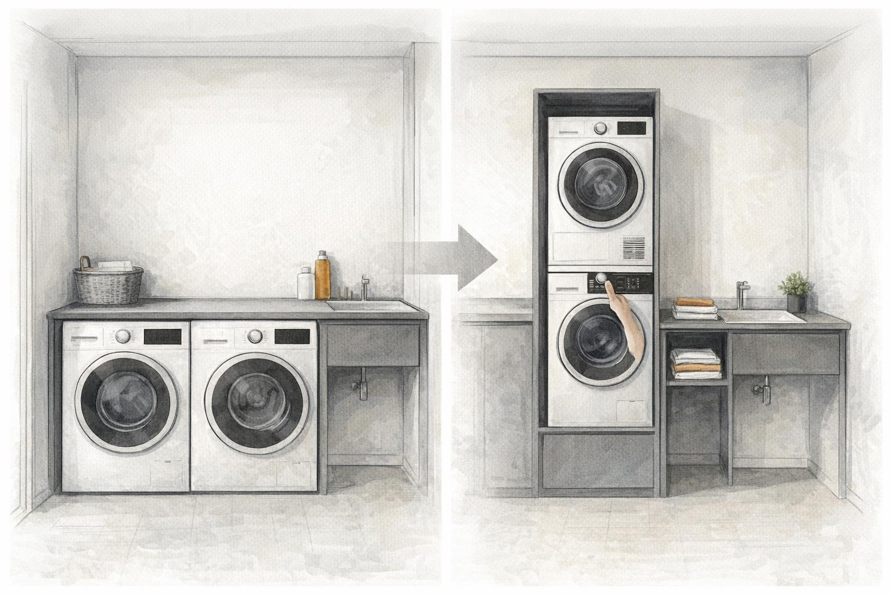

Colonna lavanderia a piena capacità con comandi ad altezza accessibile
Libera superficie a pavimento in lavanderie compatte evitando l'affiancamento di lavatrice e asciugatrice e riduce la necessità di raggiungere i comandi dell'asciugatrice posti troppo in alto.
Leggi l’approfondimento →